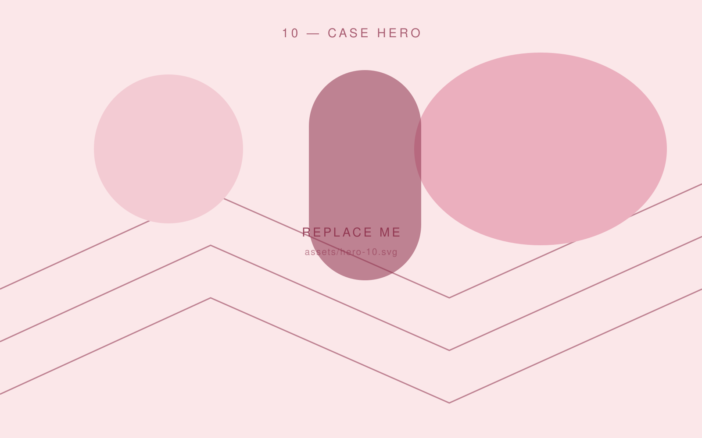
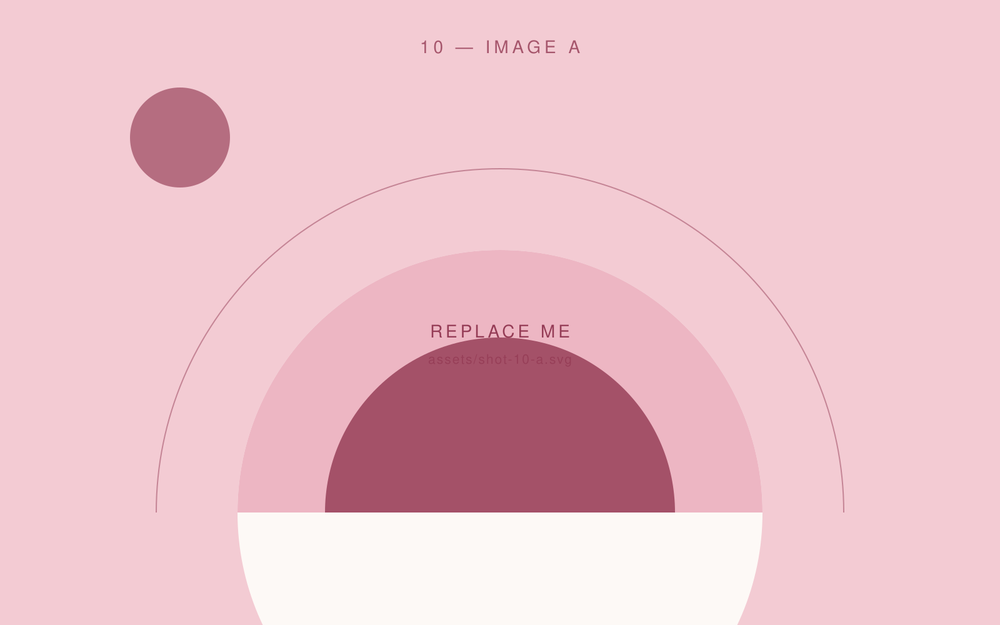
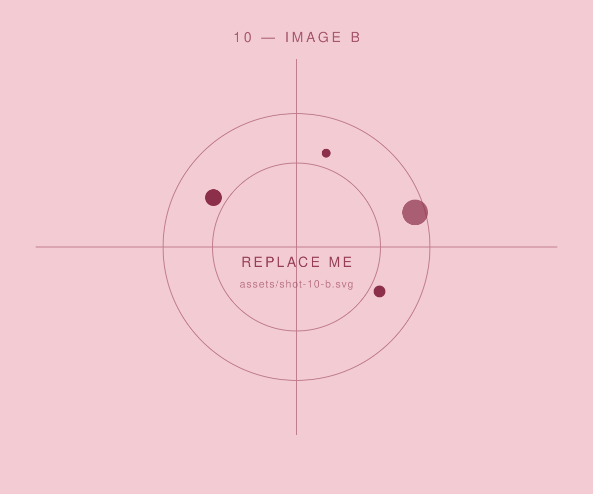

All work
Project 10 — 2026 · Personal Branding · Web Design
Studio Noa
This site, basically — a personal identity and portfolio built to look like the work rather than like a template.

The brief
Every portfolio I looked at used the same grid of four rectangles. I wanted something an internship reviewer would remember three sites later.
My approach
I set the type first and the layout second: one editorial serif, one clean sans, and a grid that is allowed to be uneven. Every animation had to earn its place or come out again.
The result
A hand-coded site with no framework, a custom cursor that behaves, and a project grid where no two shapes are the same.
Deliverables
- Identity
- Art direction
- UI design
- Hand-coded front-end


Next project — 01
Festival Finder